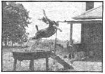

Our homestead is an acre (arid 28 perches!) in Pennsylvania's Lancaster County. Limestone country . . . deep, luscious topsoil . . . plain ways and big agri-business . . . still plenty of people with good organic vibrations, though. We mourn the trees and hedgerows that are fast being eliminated from farm fields and roads. Foraging is best where the less prosperous farms are, where a touch of wild and random weediness remains. We're trying to build up the hedgerow on our side of the fence with blackberries and mulberries, but on the other side of the fence it is being pared down to raise a few more inches of alfalfa.
We have a lopsided little chicken house; a big, solid brick garage with a lean-to for the goats; and an old brick house . . . closer to the road than we might wish. Some day we hope to have more land and less house, but for now our place is so much what we have always wanted that we are content. The animals supply milk, meat and eggs and we all-in turn-depend on the land, so everything is of a piece. Rabbits, goats, pigs, and hens live together in and out of the goat shed, pig A-frame and fenced yard. We call it the Peaceable Kingdom. (Edward Hicks' painting of the animals and the Indians, you know)
Though we've pretty well dropped out of the meetings-parties-committees game, we have no illusions that our escape from other kinds of pollution is complete and we still need to supplement what we grow here with commercial feed for our animals. We're working on that, though: increasing our comfrey and soybean plantings, putting in mangel beets, sunflowers and field corn wherever we can.
The yard is heady these days with manure aroma as we spread it around: chicken, goat and rabbit flavor. Right now we're in a good-natured tug-o'war over that commodity. Mike wants the next load for the edge of our micro-mini hayfield. I have my eye on it for the cantalope patch. Munch on, goat people! We need MORE!
The goats like May. Dock, thistle and burdock are worth their attention now and we cut it with a hand sickle from roadside and hedgerow and bring it to them. When we go somewhere in the car, we often have the minds of goats as we survey the passing vegetation. Wouldn't they love that clump of lamb's quarters, though!
Sally, the yearling Nubian-Toggenburg, is dry and unbred. We thought she'd come in season once more in early March. She didn't! Sonya, La Mancha-Nubian, miscarried her three kids a month early after being butted hard by another goat. We're milking her, though. About three quarts a day. Then there's Annie, good old Nubian Annie . . . unpedigreed and of undetermined (but I suspect advanced) age. Annie produced five kids last year just before we bought her. She'd had four the year before. So we awaited this kidding with some awe. And leave it to Annie: with scarcely a remark she produced three beautiful doe kids, after school hours and before dark! All different too: one black and brown, one black and honey, one black with white spots. Eartha, Tanya and Annushka. Annie gives us a gallon of milk a day. We share it with the kids and are trying to make butter . . . working with Mike's boyhood recollections and plenty of trial and error. Advice anyone?
Mike is rototilling manure into the patch where we'll plant peanuts next week. One of the black hens is following him, scratching her own mark in the earth. Another black hen just jogged purposefully toward the garage. There's lots of hay in there and that's where she thinks her eggs belong. The third black hen is broody. It's her 20th day and she begins to look a little weary around the eye and comb. Last year we got three chicks out of ten eggs brooded by a banty hen but this gal has better coverage.
In the kitchen the aroma is of bread-whole wheat, persimmon, and our newest enthusiasm; Alice Okorn's corn bread from MOTHER NO. 7. Mary made a batch of it today and is it GOOD! Real food. Worth getting that issue if you came in late.
Gathering greens has become a favorite rite of spring, we crave them so. Dandelions, mustard, dock, cress, violet leaves, lamb's quarters. A big mixed salad topped with dressing and sunflower seeds, eaten in the still-welcome May sun on the side porch . . . is my idea of what lunch time is all about
Almost as much fun as the cramming the freezer and squirrelling away jars of vegetables in the fall is the spring reckoning when you see how well it has all lasted. Our tomatoes, beets and fruits in jars . . . and the corn, beans, chard, soybeans, and peas in the freezer will last us well into May, when wild greens and then our own take over. I didn't buy a vegetable all winter. The fresh carrots and beets gave out early though, and as of last month our potatoes are "all". That's one of our projects for this next growing season: more root vegetables and better storage for them. The things we dried-popcorn, herbs, teas, apple schnitz and soybeans are good as new and will last into the summer.
We've been here for two years. Long enough to begin to correct some of our first mistakes, to start picking our asparagus, to need (already) an addition to the goat shed. When we strung a three-wire fence along the back border of our land to support a phalanx of grapes, the mockingbirds started to come to perch on the fence posts and sing all the songs they knew. Perhaps they realize that those are gonna be grapes down there. They're back today and in their songs we hear "Be it! Do it!" Spring is the season of the possible.
|
 |
|
|